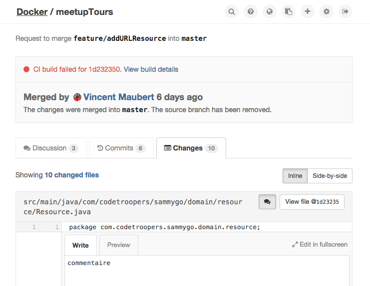
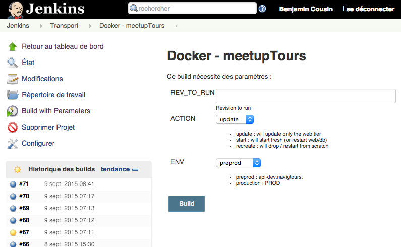

git checkout -b feature/XXX
... work ...
git commit -a -m "End my feature"
git pushBenjamin Cousin
Cedric Gatay
Membres de Code-Troopers
Application Java (base JHipster)
Code
Premier développeur
git checkout -b feature/XXX
... work ...
git commit -a -m "End my feature"
git pushMerge
Autre développeur
git merge feature/XXX
git tag feature/XXX
git pushBuild
Click jenkins build
mvn packageDeploy
Click jenkins deploy
scp myapp.war myserver:/home/app1
ssh myserver /home/app1/deploy.shInconvénients
Objectif de migration
Code
git checkout -b feature/XXX
... work ...
git commit -a -m "End my feature"
git pushMerge
Build
master
Deploy

Bénéfices
Makefile descriptif des différentes actions:
Build de l’application
Build de l’image Docker
Pas d’installations locale
Deploy
On créée autant d’instance qu’on veut
Build
Machine Jenkins non polluée
Dev
Environnement de prod facilement reproductible
Machine de dev non polluée
Coût d’entrée minime pour le nouvel arrivant
Deploy
Build
Dev
Performances faibles lors du montage de volumes sous Windows/OS X
Deploy
jwilder/nginx-proxy : gestion des virtual hostsjournald pour le logrotate--restart=always : penser à spécifier la politique de restartdocker-cleanup-volumes : suppression des volumes orphelinsFROM debian est plus léger que FROM ubuntuBuild
Dev
Ne pas utiliser les montages VirtualBox:
Sous OSX :
docker-osx-dev : préconfigure boot2docker avec rsyncdocker run -d \
--privileged=true --name newrelic
--pid=host \
--net=host \
-v /sys:/sys \
-v /dev:/dev \
--restart=always \
-v /var/run/docker.sock:/var/run/docker.sock \
-v /var/log:/var/log:rw \
-e NRSYSMOND_license_key=<KEY> \
-e NRSYSMOND_logfile=/var/log/nrsysmond.log \
newrelic/nrsysmond:latestInstallation Serveur
curl -sSL https://get.docker.com/ | shDOCKER_OPTS="-H tcp://0.0.0.0:2375 -H unix:///var/run/docker.sock"Installation Client
VERSION=1.6.2 curl -o docker https://get.docker.com/builds/Linux/x86_64/docker-$VERSION && chmod +x docker
export DOCKER_HOST=MY_MACHINE:2375
./docker psMigration vers Docker de plusieurs applications
/